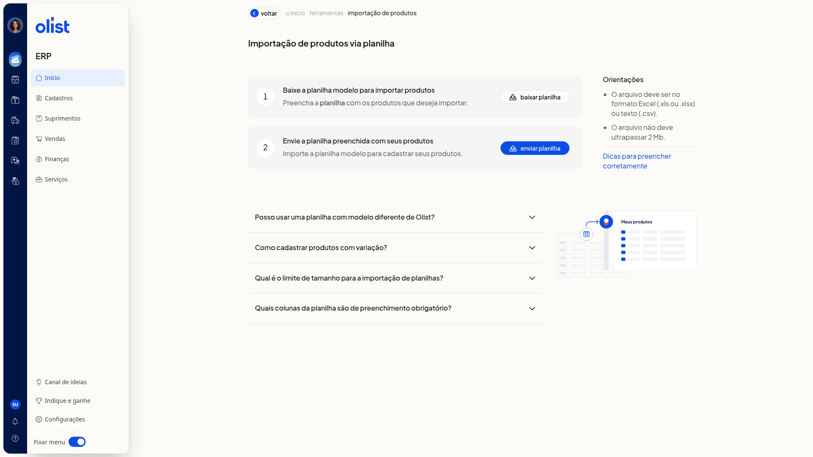
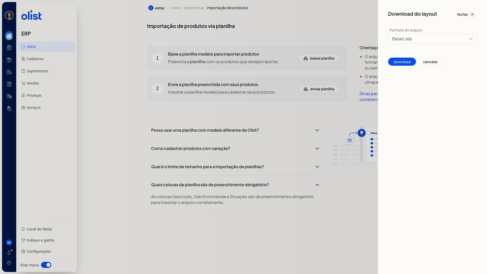

Importar planilha de produtos
Descrição
A página Importação de produtos via planilha, no ERP da Olist, orienta você a baixar o layout oficial, preencher os produtos e enviar o arquivo.
Você baixa a planilha modelo em Excel (.xls) ou Texto (.csv). A página informa o formato aceito no envio, o limite de tamanho, as colunas obrigatórias e o cadastro de variações. Você inicia o envio em enviar planilha. A página abre por Início > Ferramentas, na aba Importações, em Produtos no grupo Cadastros, ou por Cadastros > Produtos > Mais ações > Importar produtos de uma planilha.
Pré-requisitos
- Você precisa estar no ERP.
- Você precisa de permissão de Produtos e de importação de registros, com permissão para incluir e editar produtos.
- Use a planilha modelo baixada nesta tela. Não use um modelo diferente do da Olist.
- Preencha a planilha antes do envio.
Importante
- Envie um arquivo Excel (.xls ou.xlsx) ou texto (.csv), com no máximo 2 Mb e até 500 registros.
- Em Download do layout, as opções são Excel (.xls) e Texto (.csv).
- Não altere os nomes das colunas nem a ordem do cabeçalho e não exclua colunas.
- Deixe as células opcionais em branco.
- Preencha as colunas obrigatórias Descrição, Sob Encomenda e Situação.
- Use termos padronizados, como Sim, Não e os códigos de Origem. Se o termo não for o esperado, a importação é bloqueada.
- O preço promocional informado na planilha só é importado se a empresa tiver o módulo de preço promocional.
- Para vincular o fornecedor, ele já precisa estar cadastrado com o mesmo nome informado na planilha.
- As imagens das colunas de URL imagem só são importadas se a empresa tiver espaço de anexos disponível.
Instruções
Pela lista de produtos, acesse Cadastros > Produtos, clique em Mais ações e depois em Importar produtos de uma planilha. A mesma página abre. Siga a partir de baixar planilha.
Por Ferramentas:
-
Acesse Início > Ferramentas.
-
Abra a aba Importações.

-
Clique em Produtos no grupo Cadastros.

-
Clique em baixar planilha.
-
Escolha Excel (.xls) ou Texto (.csv) em Download do layout para baixar a planilha modelo.

-
Preencha a planilha modelo com os produtos.
- Em Situação, informe Ativo ou Inativo.
- Em Sob Encomenda, informe Sim ou Não.
- Nos dados fiscais, informe Unidade, NCM com 8 dígitos e Origem com código de 0 a 8.
- Deixe ID em branco para produto novo. Para atualizar, informe o ID exato.
- Em categorias, use o formato Nível 1 > Nível 2 > Nível 3.
- Informe até 10 URLs diretas de imagem. As colunas 1 a 6 são armazenadas e as colunas 7 a 10 são externas.
- Para variações, no produto pai informe Tipo de Produto com V.
- No produto filho, informe Tipo de Produto com S, K, F ou M, nunca com V, e preencha Código do Pai.
- Em Variações, use o formato Tamanho:GG||Cor:Branco.
- Clique em enviar planilha. A validação mostra a linha e o motivo da falha. Se a planilha estiver correta, os produtos são criados ou atualizados.
Links relacionados
Se precisar de ajuda, fale com o suporte.